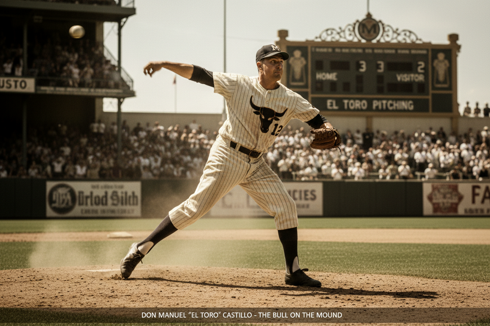
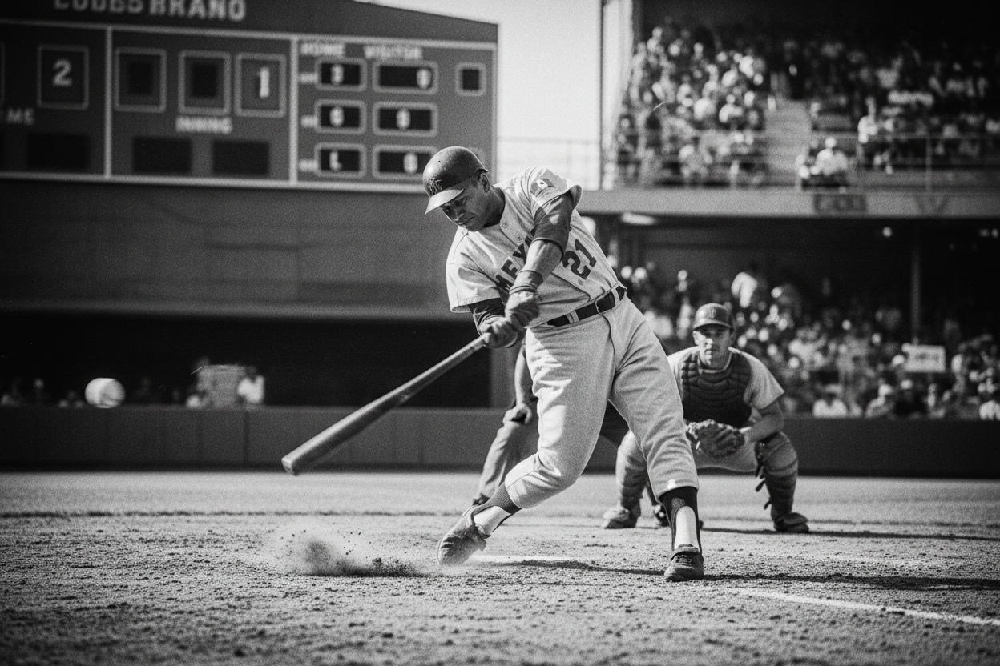
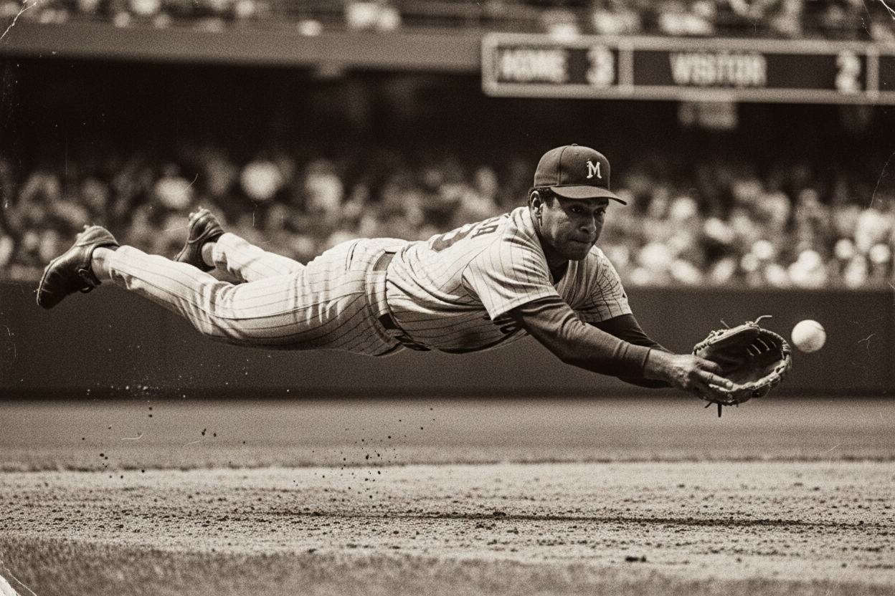

Don Manuel 'El Toro' Castillo
Líder histórico de efectividad de la liga. Famoso por su implacable bola rápida y un temperamento de hierro que definió el carácter de los Truenos.
 EN VIVO: 7º INNING
EN VIVO: 7º INNING

Líder histórico de efectividad de la liga. Famoso por su implacable bola rápida y un temperamento de hierro que definió el carácter de los Truenos.

Ganador de 3 MVP de la liga. Dueño absoluto de la marca de jonrones históricos de la franquicia y ídolo eterno de la fanaticada santiaguera.

Guante de Oro indiscutible por una década. Su destreza defensiva definió los campeonatos de los años 90 con jugadas imposibles.